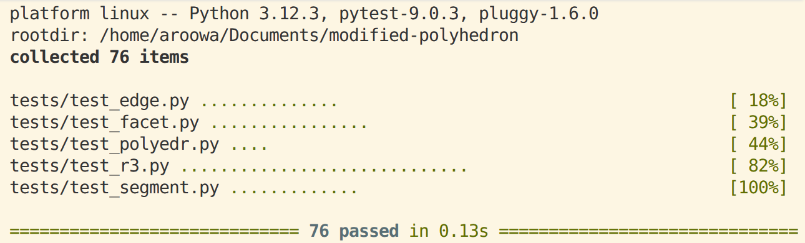

23 апреля 2026 г.
Отчёт посвящён модификации проекта «Изображение проекции полиэдра». Решалась задача, сформулированная следующим образом: «Назовём точку в пространстве «хорошей», если её проекция находится строго вне окружности \(x^2+y^2=1\). Необходимо модифицировать эталонный проект таким образом, чтобы определялась и печаталась следующая характеристика полиэдра: сумма площадей граней, центр и хотя бы одна вершина которых — «хорошие» точки».
Исходный программный проект реализует алгоритм построения ортогональной проекции произвольного полиэдра на плоскость с учётом теней, отбрасываемых его гранями. Архитектура проекта разделена на модули геометрических примитивов, алгоритма отсечения и графического вывода.
Требуется вычислить и вывести в консоль суммарную площадь проекций всех «хороших» граней. Площадь должна рассчитываться исключительно для двумерной проекции грани на плоскость \(XOY\). При этом визуализация самого полиэдра должна сохраняться в исходном виде без изменения алгоритма отсечения невидимых линий и расчёта теней.
При выполнении задачи были модифицированы файлы: r3.py,
polyedr.py, изменен и переименован файл запуска, а также
добавлены тесты в test_facet.py и
test_polyedr.py. Далее мы рассмотрим модификации
детально.
r3.pyИсходя из постановки задачи, первоочерёдно нам нужно добавить метод, возвращающий проекцию трёхмерной точки на плоскость \(XOY\). Это необходимо для проверки условия «хорошести» точки и вычисления площадей проекций.
def xy(self):
"""Возвращает проекцию на плоскость XOY как кортеж (x, y)"""
return (self.x, self.y)Метод xy() возвращает кортеж из двух координат \((x, y)\), что позволяет удобно работать с
двумерными проекциями точек без необходимости каждый раз явно обращаться
к атрибутам x и y объекта R3.
Данная функция инкапсулирует операцию отбрасывания \(Z\)-компоненты и предоставляет удобный
интерфейс для дальнейших двумерных вычислений.
polyedr.pyОсновные изменения сосредоточены в классе Facet, где
реализованы два новых метода: condition() и
facet_area().
Метод condition() проверяет, является ли грань
«хорошей». Для этого вычисляется центр многоугольника как среднее
арифметическое координат всех вершин:
\[ c = \frac{1}{n} \sum_{i=1}^{n} v_i \]
Затем последовательно проверяется неравенство для центра и для каждой вершины грани:
\[ x_c^2 + y_c^2 > 1 \quad \text{и} \quad \exists v_i: x_i^2 + y_i^2 > 1 \]
Если оба условия выполняются, метод возвращает логическое значение
True. Использование строгого неравенства гарантирует, что
точки, лежащие точно на границе окружности, не будут считаться хорошими,
что соответствует постановке задачи.
def condition(self):
flag_center = False
flag_vertex = False
if R3.xy(self.center())[0] ** 2 + R3.xy(self.center())[1] ** 2 > 1:
flag_center = True
for i in range(len(self.vertexes)):
if R3.xy(self.vertexes[i])[0] ** 2 + R3.xy(self.vertexes[i])[1] ** 2 > 1:
flag_vertex = True
break
if flag_vertex == True and flag_center == True:
return True
else:
return FalseВычисление площади проекции выполняется в методе
facet_area(). Поскольку грань может быть произвольным
выпуклым многоугольником, применяется алгоритм триангуляции «веером» от
первой вершины. Площадь каждого треугольника в проекции рассчитывается
по формуле ориентированной площади, взятой по модулю:
\[ S_{\triangle} = \frac{1}{2} \left| (x_1 - x_3)(y_2 - y_3) - (y_1 - y_3)(x_2 - x_3) \right| \]
# Площадь треугольника (вспомогательный метод)
@staticmethod
def _area(a, b, c):
return abs(0.5 * ((a[0] - c[0]) * (b[1] - c[1]) - (a[1] - c[1]) * (b[0] - c[0])))
def facet_area(self):
sum_area = 0
if self.condition() == True:
for i in range(len(self.vertexes) - 1):
sum_area += self._area(R3.xy(self.vertexes[0]), R3.xy(self.vertexes[i]), R3.xy(self.vertexes[i + 1]))
return sum_areaСумма площадей всех треугольников даёт полную площадь проекции грани.
Если грань не удовлетворяет условию condition(), метод
возвращает ноль. Это позволяет избежать ветвления на этапе агрегации
результатов.
В методе Polyedr.draw() добавлен предварительный проход
по списку граней. На этом этапе накапливается суммарная площадь всех
хороших граней. Результат выводится в стандартный поток вывода. Далее
выполняется стандартный алгоритм расчёта теней и отрисовки рёбер,
который не зависит от новых вычислений и сохраняет обратную
совместимость.
# Метод изображения полиэдра
def draw(self, tk):
# ...
# Добавлено
polyedr_area = 0
for e in self.edges:
for f in self.facets:
e.shadow(f)
for s in e.gaps:
tk.draw_line(e.r3(s.beg), e.r3(s.fin))Относительно эталонного проекта были добавлены несколько файлов, упрощающих работу при первом запуске в виртуальном окружении IDE:
help.md — справочная информация по использованию
проекта;task.md — полное текстовое описание условия
задания;requirements.txt — список зависимостей Python для
быстрой установки.Также были удалены файлы, не касающиеся модификации, а аналогичные файлы немного изменены и переименованы. Запускать проект предполагается с помощью файла:
run_modification.pyДля верификации корректности реализации использован фреймворк
pytest в сочетании со стандартной библиотекой
unittest. Тестовая стратегия покрывает граничные случаи,
проверку условия фильтрации и точность вычисления площадей с учётом
погрешностей чисел с плавающей запятой.
Сначала рассмотрим новые тесты для метода condition().
Здесь всё довольно прозаично: тесты проверяют различные комбинации
расположения центра и вершин относительно единичной окружности.
def test_condition_good(self):
"""Центр и хотя бы одна вершина строго вне x^2+y^2=1"""
verts = [R3(2.0, 0.0, 0.0), R3(3.0, 0.0, 0.0), R3(2.5, 1.5, 0.0)]
f = Facet(verts)
self.assertTrue(f.condition())
def test_condition_center_inside(self):
"""Центр внутри круга, условие должно быть False"""
verts = [R3(0.1, 0.0, 0.0), R3(1.5, 0.0, 0.0), R3(0.0, 1.5, 0.0)]
f = Facet(verts)
self.assertFalse(f.condition())
def test_condition_all_inside(self):
"""Все точки внутри круга"""
verts = [R3(0.2, 0.0, 0.0), R3(0.3, 0.0, 0.0), R3(0.0, 0.4, 0.0)]
f = Facet(verts)
self.assertFalse(f.condition())
def test_condition_boundary_point(self):
"""Вершина точно на окружности (x^2+y^2=1) -> не считается 'хорошей'"""
verts = [R3(1.0, 0.0, 0.0), R3(0.0, 1.0, 0.0), R3(0.7, 0.7, 0.0)]
f = Facet(verts)
# Если все вершины <= 1, условие должно быть False
self.assertFalse(f.condition())Для метода facet_area() были добавлены тесты,
проверяющие корректность вычисления площади проекции. Важно отметить,
что площадь должна быть положительной только для «хороших» граней, для
остальных она равна нулю.
def test_facet_area_positive(self):
"""Площадь треугольника в проекции при порядке вершин против часовой стрелки"""
# Грань далеко от начала координат, чтобы condition() == True
verts = [R3(3.0, 0.0, 0.0), R3(5.0, 0.0, 0.0), R3(3.0, 2.0, 0.0)]
f = Facet(verts)
# Ожидаемая площадь: 0.5 * |2*2| = 2.0
self.assertAlmostEqual(f.area, 2.0)
def test_facet_area_zero_when_bad(self):
"""Если условие 'хорошести' не выполняется, area должна быть 0 (согласно текущей реализации)"""
verts = [R3(0.1, 0.0, 0.0), R3(0.2, 0.0, 0.0), R3(0.0, 0.3, 0.0)]
f = Facet(verts)
self.assertAlmostEqual(f.area, 0.0)Для класса Polyedr был добавлен тест на метод
draw(), проверяющий корректность вывода суммарной площади.
В тесте создаётся искусственный полиэдр с известными координатами
вершин, и проверяется вывод программы на соответствие аналитически
рассчитанному значению площади. Захват стандартного вывода
осуществляется через io.StringIO, что позволяет тестировать
консольный вывод без открытия графического окна.
class MockTkDrawer:
"""Заглушка для TkDrawer, чтобы тесты не открывали графическое окно"""
def clean(self): pass
def draw_line(self, p1, p2): pass
class TestPolyedrAreaSum(unittest.TestCase):
def test_draw_prints_correct_area(self):
"""Проверка, что draw() выводит сумму площадей 'хороших' граней"""
# Создадим минимальный полиэдр вручную для контроля данных
p = Polyedr.__new__(Polyedr)
p.vertexes, p.edges, p.facets = [], [], []
# Грань 1: "хорошая", площадь проекции = 2.0
v1 = [R3(3.0, 0.0, 0.0), R3(5.0, 0.0, 0.0), R3(3.0, 2.0, 0.0)]
p.facets.append(Facet(v1))
# Грань 2: "плохая", площадь = 0 по логике condition()
v2 = [R3(0.1, 0.0, 0.0), R3(0.2, 0.0, 0.0), R3(0.0, 0.3, 0.0)]
p.facets.append(Facet(v2))
# Рёбра не влияют на сумму площадей, но добавим для целостности
p.edges = [Edge(v1[0], v1[1]), Edge(v1[1], v1[2]), Edge(v1[2], v1[0])]
# Захватываем print()
captured_output = io.StringIO()
sys.stdout = captured_output
p.draw(MockTkDrawer())
sys.stdout = sys.__stdout__
output = captured_output.getvalue().strip()
self.assertAlmostEqual(float(output[26::]), 2.0)Ключевые проверенные сценарии включают:
condition() == True.math.isclose для избежания ложных срабатываний.
На скриншоте демонстрируется успешное прохождение набора unit-тестов. Зелёные маркеры подтверждают отсутствие регрессий в базовом алгоритме теней и корректную работу новой функциональности расчёта площадей.
Таким образом, при решении данной задачи было реализовано 3 новых
метода: xy() в классе R3,
condition() и facet_area() в классе
Facet (вспомогательный метод _area() не учитвается), а
также модифицирован метод draw() в классе
Polyedr. Общий объём модификации вместе с тестами не
превышает 100 строк кода.
pandoc -o report.html -f markdown -t html -s \
--template defaults/default.html5 \
--lua-filter include-code-files.lua \
--metadata-file=metadata.yaml \
--mathjax \
report.md
pandoc -o report.pdf -f markdown -t pdf -s \
--template defaults/default.latex \
--lua-filter include-code-files.lua \
--metadata-file=metadata.yaml \
report.md
pandoc -o report.docx -f markdown -t docx \
--lua-filter include-code-files.lua \
--metadata-file=metadata.yaml \
report.md